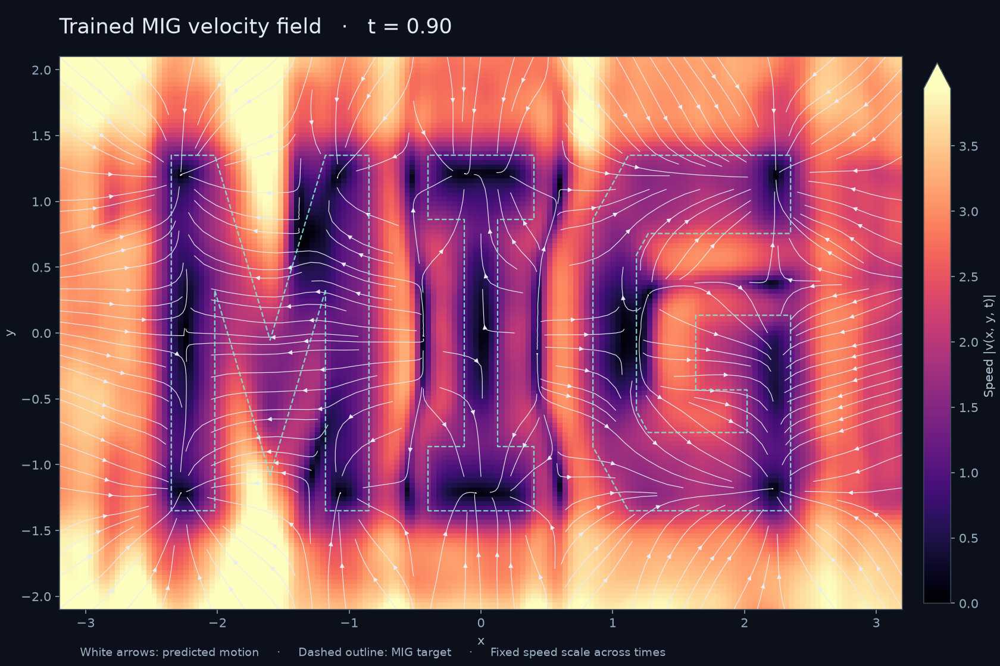

Trained vector field
The final trained flow model, shown as a speed heat map with streamlines and arrows. Brighter colors mean faster movement. The dashed outline marks MIG.


The weights stay fixed at the end of training. The slider changes the time supplied to that trained model. Streamlines show the field at that one time; they are not point trajectories across changing times.
Colors show the magnitude of the network’s predicted velocity, not point density. All views share one linear color scale, capped at the combined 99th percentile; the color-bar extension marks larger values. Speed is measured in plot units per unit of flow time. Network predictions far from the data are less constrained by training.
40,000 training steps · 3 hidden layers of 96 units · Plot settings · Training settings